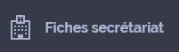

Philippines
Autres langues parlées : Cebuano
Présentation
Hello. Ako ay isang nars. Pwede ko bang gamitin ang telepono
ko para maisalin ko ang mga tanong na itatanong ko sa inyo?
Nars
Doktor
Tagapagligtas
Boluntaryo
Tagatanggap
Mag-aaral sa medisina
Komadrona
Sekretarya
Tagapag-alaga
Identité
Maaari ba ninyong ipakita sa akin ang inyong pasaporte?
Maaari ba ninyong ipakita sa akin ang inyong ID?
Maaari ba ninyong ipakita sa akin ang papel na may pangalan ninyo?
Maari ba ninyong ipakita sa akin ang inyong European health card?
Maari ba ninyong ipakita sa akin ang inyong private insurance?
Ang mga gastos sa pangangalaga ay kailangan ninyong bayaran.
Ang mga gastos sa pangangalaga ay saklaw ng insurance. Hindi ninyo ito kailangang bayaran.
Anong bansa kayo nanggaling?
Saan kayo nakatira?
Mayroon ba kayong telepono para kayo ay aking makontak?
Attente
Pakihintay
sa mga silya
sa bangko
sa tanggapan
Tatawagin ka namin.
Mangyaring huwag kumain, uminom o manigarilyo habang naghihintay.
"Ang iyong pamilya ay kailangang maghintay dito. "
Depende sa sitwasyon ng inyong kalusugan, may posibilidad na hilingin
ng doktor na suriin kayo kagaya pagsuri sa dugo, radiography, scans o pwedeng hilingin na dito muna kayo para maobserbahan.
Hinihiling namin na wag kayong kumain o uminom hanggang wala kayong pahintulot ng doktor.
May ilang pagsusuri na kailangang walang laman ang inyong tiyan.
Kailangan ninyong maghintay ng isang oras para makuha ang resulta ng inyong dugo.
Accueil
Ano ang nangyari sa inyo?
May masakit ba sa inyo?
oo
hindi
Ipakita ninyo kung saan masakit.
Kayo ay susuriin ko.
Masusukat mo bang ang sakit sa pagitan ng isa hanggang sampu?
Pag sampu ay hindi matitiis ang sakit.
wala
isa
dalawa
tatlo
apat
lima
anim
pito
walo
siyam
sampu
Maaari ba ninyong hubarin ang inyong damit para masuri ko kayo?
Maaari ninyong itira ang inyong damit panloob.
Maari kayong umupo sa silya.
Maari kayong humiga sa lamesa.
Maaari kayong humiga sa stretcher.
Neurologie
Nawalan ba kayo ng malay?
Alam ba ninyo kung ano ang araw ngayon?
Alam ba ninyo kung nasaan kayo?
Pakisundan ninyo ang aking daliri.
Naigagalaw ba ninyo ang inyong mga kamay at mga paa?
Hahawakan ko ang inyong mga kamay at paa. Nararamdaman ba ninyo?
Tumingin kayo sa akin. Gusto kong obserbahan ang inyong mata.
Mayroon ba kayong pangingilig? Ipakita ninyo sa akin.
Itulak ninyo sa aking mga kamay.
Ibuka ang inyong mga mata.
Ibuka ang inyong bibig.
Itaas ang kanang braso.
Masakit ba ang inyong ulo?
Ang sakit ay lumitaw:
Unti-unti
biglaan
Mayroon ba kayong sakit sa leeg?
Nagbyahe ba kayo nitong mga nakaraang buwan?
Nagbyahe ba kayo sa ibang bansa? Saan?
Naiistorbo ba kayo ng liwanag?
Naiistorbo ba kayo ng ingay?
Tutusukin ko ang dulo ng inyong daliri para malaman ang taas ng inyong asukal.
Pneumologie
Ilalagay ko ang aking kamay sa inyong tiyan upang mabilang ang inyong paghinga. Huminga kayo nang normal at huwag makipag-usap.
Kinakapos ba ang inyong paghinga?
Huminga ng malalim at hadl;angan ang inyong paghinga.
Huminga ng normal.
Huminga ng malalim.
Nagsisigarilyo ba kayo?
Mayron ba kayong hika?
Kinuha ba ninyo ang gamot sa hika?
Nakalanghap ba kayo ng iba-ibang uri ng usok?
Pwede bang suminga kayo para makita ko kung mayroong baks ng soot.
Cardiologie
Ang inyong sakit:
Mahigpit
Kagat
Nakakapaso
Ang sakit ba ay nararamdaman ninyo sa ibang bahagi ng inyong katawan? Pwede ba ninyo itong ipakita?
Kailan pa ninyo nararamdaman itong kirot?
Mga minuto
Mga oras
Mga araw
Kukuhanin ko ang inyong pulso.
Ididin ko ang inyong kuko ng konti.
Kukuhanin ko ang inyong presyon.
Mayroon ba kayong kaba?
Pakibukas ang inyong bibig at itaas ang inyong dila. Bibigyan ko kayo ng gamot.
Nakakatulong ba ang gamot sa kirot?
Umiinom ba kayo ng alak?
Kayo ba ay may diabetes?
Mataas ba ang inyong cholesterol?
I-rerecord ko ang inyong puso. Hindi kayo masasaktan, pero subukan ninyong huwag kumibo ng ilang segundo.
Malaise
Naramdaman ba ninyo ang dating ng pagkahilo?
Ano ang inyong pakiramdam nuong kayo ay nahilo?
Pangingilig
Hilo
Kapaguran
Nagkaroon ba kayo ng hilo nuon?
Kumakalat ba ang sakit? Saan?
Saang parte mayroong sakit?
Gaano kayo katagal nahilo?
Nawalan ka na ba ng ihi?
Kinagat ba ninyo ang inyong dila? Pakibukas ang bibig?
Nagkukumbulsyon ba kayo?
Kumain ba kayo ngayon?
Digestif
Ipakita ninyo kung saan masakit.
Kumakalat ba ang sakit sa ibang parte? Saan?
Bumaba ba ang timbang ninyo nitong mga nakaraang buwan? Ilang kilo?
Mayroon ba kayong parang nagliliyab na pakiramdam kapag umiihi?
Napansin ba ninyo na may dugo sa ihi?
Kailan ang inyong huling regla?
Buntis ba kayo?
Kailan ang huling beses na kayo ay umihi?
Tinitibi ba kayo?
Ilang araw na?
Nahihilo ba kayo?
Nagkaroon ba kayo ng problema sa pagdumi?
Nagsuka ba kayo?
May napansin ba kayong dugo sa inyong dumi?
Mayroon ba kayong kabag?
Kailangan kong suriin ang inyong puwit. Okey ba sa inyo?
Kailangan ninyong umihi sa bote para ito ay aming masuri.
Kailangan ninyong hugasan ang inyong ari bago kayo umihi sa garapon.
Infectieux
Kayo ba ay tinusok o kinagat?
Ipakita ninyo sa akin kung saan.
Ipakita ninyo sa akin kung saan lumabas ang mga unang butol.
Gaano na katagal na mapula ang binti?
Kayo ba ay nangangati?
Kailangan kayong magpahinga na nakahiwalay.
Dapat na manatili ang maskara sa inyo.
Nagkaroon ba kayo ng hindi protektadong pagtatalik?
Kukuhanin ko ang inyong temperatura.
Ophtalmologie
Ang nakikita ba ninyo ay malabo?
Ang nakikita ba ninyo ay doble?
Masakit ba ang inyong ulo?
Pakiramdam ba ninyo na umiikot ang kuwarto sa inyong paligid?
Napahampas ba ang ulo ninyo kamakailan lamang?
Antécédents
Mayroon ba kayong mga sakit (diyabetes, alta presyon at iba pa)?
Kayo ba ay naospital kamakailan lamang?
Mayroon ba kayong gamot sa ngayon? Para saan?
Mayroon ba kayong reseta para sa inyong lunas?
Mayroon ba kayong allergy? Anong klase?
Mayroon bang kasaysayan ng sakit sa inyong pamilya?
Pédiatrie
Nabawasan ba ang timbang ng sanggol? Ilan?
Up to date ba ang mga bakuna ng sanggol?
May sakit ba ang iba ninyong mga anak?
Maayos ba siyang kumain?
Nagsusuka ba siya?
Siya ba ay mas hindi mapakali kumpara sa karaniwan?
Mukha bang mas pagod siya kumpara sa karaniwan?
Nagtatai ba siya?
Gynécologie
Buntis ba kayo?
Ilang linggo na?
May regla ba kayo?
Nawalan ba kayo ng dugo?
Ano ang kulay ng dugo, pula o itim?
Nagkameron ba kayo ng problema sa inyong nakaraang pagbubuntis?
Mayroon ba kayong contractions?
Nabasag na ba ang tubig?
Nararamdaman ba ninyo na gumagalaw ang bata?
Mayroon ba kayong pampigil sa pagbubuntis?
Kailangan kong gumawa ng pagsusuri sa inyo, pakisuyong humiga kayo sa lamesa.
Kailgan ninyong tanggalin ang inyong damit panloob.
Traumatologie
Tumapon ba kayo sa sasakyan?
Gaano kabilis ang inyong takbo?
Nakasuot ba kayo ng proteksyon sa ulo?
Mayroon ba kayong seatbelt?
Kayo ba ay nahulog?
Gaano kataas ang pagkahulog ninyo?
Gumagamit ba kayo ng anticoagulants o gamot na pampalabnaw ng dugo?
Lalagyan ko kayo ng brace sa leeg para maprotektahan ang inyong gulugod.
Kailangan kong magdagdag ng antiseptiko sa sugat.
Kailangan kong tahiin ang sugat.
Kailangan kong maglagay ng benda.
Kailangan kong maglagay ng anesthesia sa paligid ng sugat.
Pakiusap huwag kayong gumalaw.
Dapat mayroon kang isang plaster
Kailangan ninyo ng operasyon.
Examens
Kailangan ninyo:
Bibigyan ko kayo ng:
Lalagyan ko kayo ng swero.
Kukuhanan ko kayo ng dugo.
bendahe
Iiniksyunan ko kayo.
Papaliguan ko kayo.
scan
X-ray
Dapat mayroon kang isang plaster
ultrasound
operasyon
ngayon
bukas
Kailangan ninyong maligo at hugasan ang inyong buhok bago kayo maoperahan.
Hindi masakit ang pagsusuri.
Pagkatapos ng operasyon, kailangan ninyo ng:
kalilya
tubo para sa sikmura
alisan ng nana
peklat
Kailangan ninyong tanggalin ang mga alahas at mga piercings.
Kailngan ninyong tanggalin ang cutex.
Kailangan ninyong tanggalin ang inyong pustiso at gamit sa pandinig.
Sabihin ninyo sa akin kung mayroon kayong:
Pace-maker
cardiac valve
stent
prosthesis
intracranial clips
cochlear implant
intraocular lens implant
Ang ilang metal sa katawan
Defibrillator
PICC line (Peripherally Inserted Central Catheter)
Nagpapasuso ba kayo?
Pwede ba kayong umupo?
Pwede ba kayong bumangon?
Pwede ba kayong lumakad?
Traitements et consignes
Bibigyan ko kayo:
gamot
analgesic
antibiyotiko
Hindi kayo pwedeng uminom.
Hindi kayo pwedeng kumain.
Hindi kayo pwedeng bumangon.
Kailangan ninyong nakahiga ng patalikod.
Hindi kayo pwedeng magsigarilyo.
Kung tatawag kayo, pakipindot dito.
Pag bubuksan o sasarahan ang ilaw, pakipindot dito.
Ang banyo ay dito.
Ang liguan ay dito.
Ang kwarto ninyo ay dito.
Conclusion
Mayroon kayong bali.
Wala kayong bali.
Kailngan ninyo ng operasyon.
Kailangan ninyong bumalik bukas.
kailangan ninyong bumalik sa:
Kailangang maalis ang iyong tahi sa:
Dapat mayroon kang isang plaster
Dapat mayroon kang isang pag-ikot.
Puwede na kayong umuwi.
Kailangan ninyong pumunta sa ospital.
Kailangan ninyong manatili sa ospital.
Ililipat kayo sa ibang departamento.